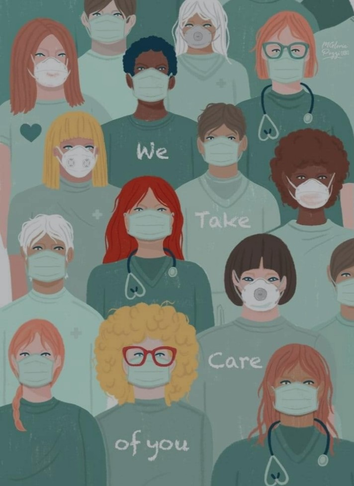
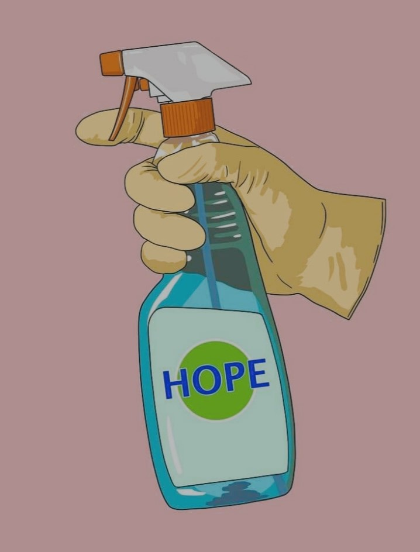

TODAY
|  |  |
|
COVID-19 spreads primarily through:
- Droplets: speaking, singing, sneezing, coughing
The symptoms of COVID-19 are:
Most common symptoms:
Today’s statistics of worldwide COVID-19 cases are almost about 122 million, 27 million for those who have died because of the said virus, and lastly, the recoveries are just 63 million people. This virus can infect all people especially the children and the senior citizens. They are prone to this virus due to their weak immune system. People suffered a lot in this situation especially people with no fixed income and unstable finances. The economy of the world decreased because businesses were forced to shut down. The global health, flights were canceled, lost of jobs, lost of love ones, etc. It brought negativity to us people and in our economy due to this devastating happening. There are ways on how we can help to stop these increasing cases in the world, particularly in the Philippines. By simply following the precautionary measures that was implemented:
- Wearing a mask
It caused a lot of sufferings that humans can’t handle. People are starving and calling for help and destroyed a
lot people’s lives. A lot of people are dying everyday and it is devastating that were going through this, but you’re
not alone, we’re all in this together, so we need to end it together, uniting as one. All the difficulties and pain
were experiencing today, it will end someday. Everything happens for a reason, and we can pass through these challenges.
God will never leave us.
“For I know the plans I have for you, declares the Lord, plans to prosper you and not to harm you, plans to give you hope and a future.”
Jeremiah 29:11
|